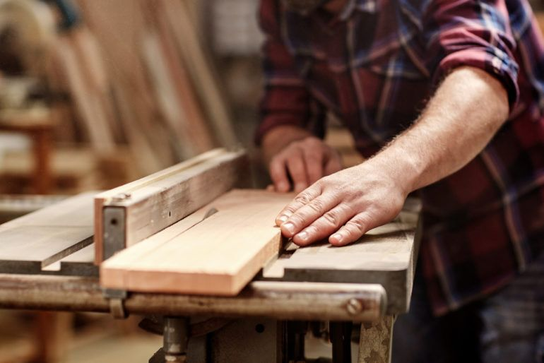
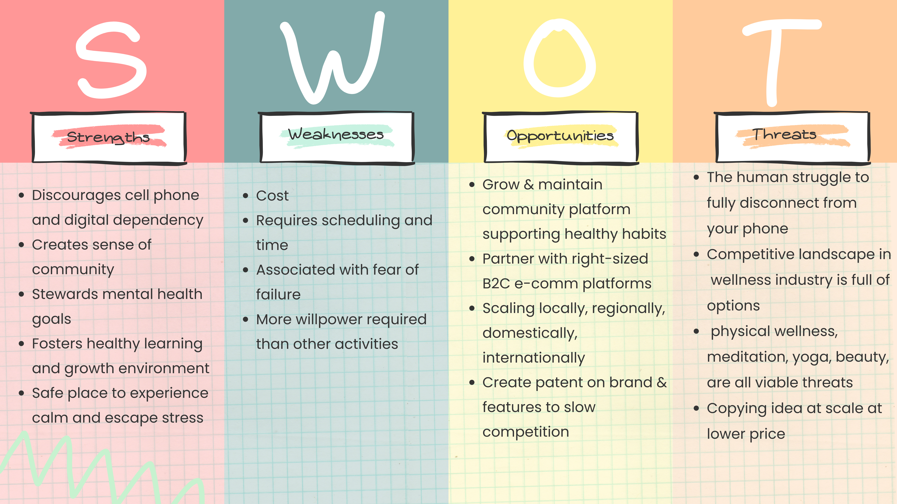
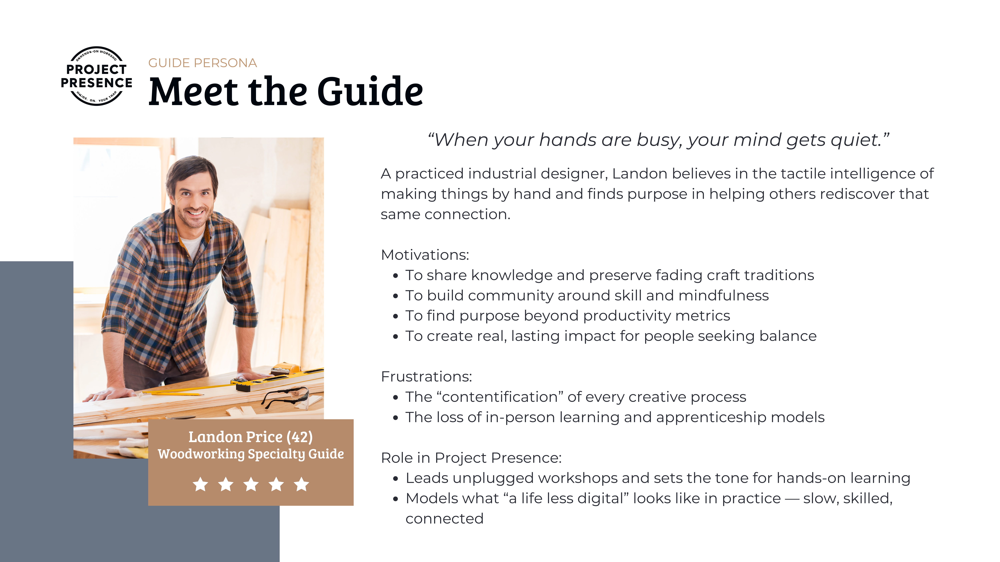
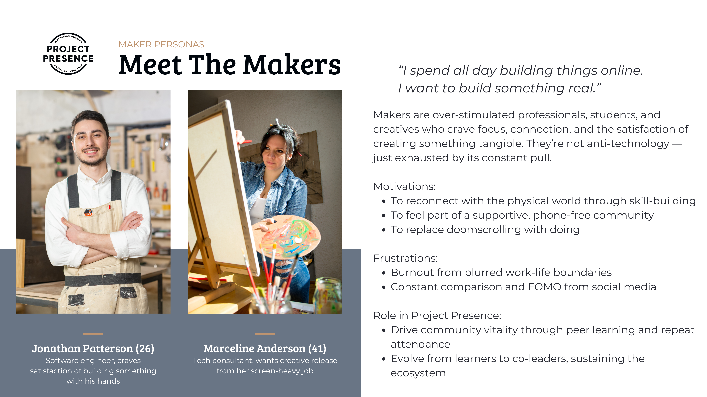

Always-on screens are eroding focus, sleep, and real-world connection.
We framed the challenge as a human performance issue: how might we design phone-free experiences that help people feel present again?
Problem Framing
Adjacent markets—from wellness retreats to craft education—offer escape, not lasting behavior change.
We identified whitespace for a recurring, community-driven model focused on hands-on skill development and phone-free presence.
Market Research Market SizingBased on user interviews, two primary personas emerged.
The Guides — skilled craftspeople looking for revenue, community, and a way to preserve their craft.

The Makers — overstimulated professionals seeking improved focus, creativity, and well-being.

Interview InsightsWe generated multiple solution concepts and evaluated them against revenue potential, operational feasibility, differentiation, and pace to market.
A scoring model pointed to the strongest viability in a membership-based analog skill ecosystem that offers structured, phone-free workshops to drive repeat participation and predictable revenue.
Project Presence is a recurring, in-person workshop model focused on restoring attention and human connection through hands-on learning in phone-free environments.
Positioning: “Busy hands. Better focus. Real connection.”
Initial programming includes woodworking, pottery, textiles, and foraging skills led by expert Guides.
For individuals experiencing digital overload, Project Presence provides structured, phone-free skill-building environments that produce measurable improvements in focus, well-being, and social connection.
Unlike single-event retreat models, the experience is designed to be repeatable, community-driven, and integrated into everyday life.
Project Presence monetizes through a mix of recurring and transactional streams:
Tiered memberships — predictable recurring revenue and higher LTV.
Drop-in workshop fees — lower-friction way to acquire and trial new customers.
Corporate offsite programs — high-margin enterprise segment with strong expansion potential.
Guide-led content & merchandise — ancillary revenue that also supports Guide retention.
Key cost levers include facility partnerships, instructor utilization, and standardized operations to keep margins healthy.
The service is built around a few core experience components:
No-phone enforced environments — reduces cognitive switching and increases perceived program value.
Hands-on skill development — builds mastery, progress, and emotional stickiness.
Guide + Maker community — creates defensible differentiation and deepens loyalty.
Local chapter model — enables scalable, low-capex expansion across cities.
To validate and scale Project Presence, our next steps focus on piloting, measurement, and growth pathways: